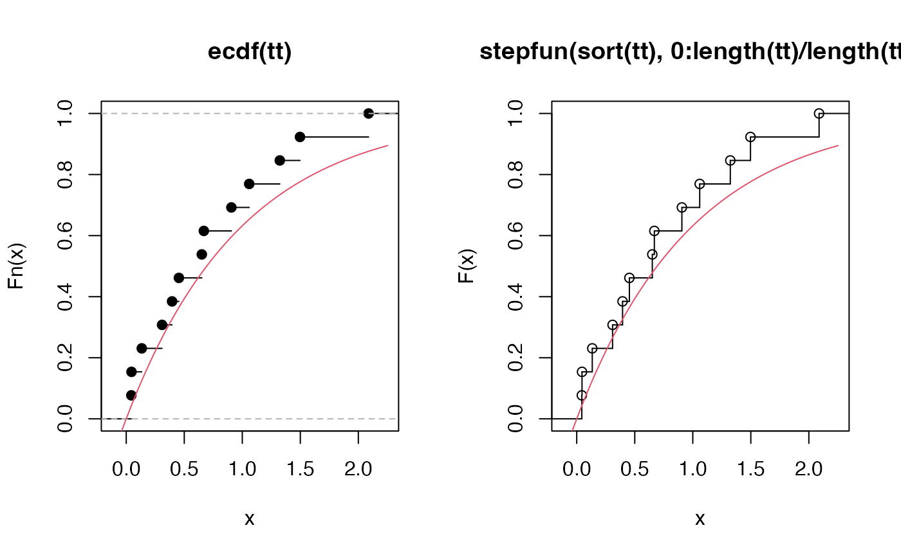

Event time simulator
events.Rdtimetoevent turns exponential wait times to time-to-event data
within a desired duration, it handles 0 and infinite rates in a robust manner.
events simulates event times based on an exponential time-to-event
distribution.
timetoevent(rate, duration) events(vocal_rate = 1, move_rate = 1, duration = 10, movement = 0, avoid = c(0, 0))
Arguments
| rate | rate for the exponential distribution ( |
|---|---|
| duration | total time duration to consider (in minutes). |
| vocal_rate | vocal rate for exponential distribution ( |
| move_rate | movement rate for exponential distribution ( |
| movement | standard deviation for a bivariate Normal kernel to simulate locations centered at the nest location. |
| avoid | range along the x axis to avoid with respect to movement locations, i.e. location for a movement event within this interval will be rejected and a new location drawn. |
Value
An events object data frame with coordinates (x, y; centered at 0 that is nest location), event times (t) and indicator for vocal events (v).
Author
Peter Solymos
See also
Examples
timetoevent(0, 10)#> numeric(0)timetoevent(Inf, 10)#> [1] 0rr <- 1 tt <- timetoevent(rr, 10) op <- par(mfrow=c(1,2)) plot(ecdf(tt)) curve(1-exp(-rr*x), add=TRUE, col=2) # cdf plot(stepfun(sort(tt), 0:length(tt)/length(tt)), ylab="F(x)")par(op) e <- events(movement=1, duration=60) mx <- max(abs(e[,1:2])) plot(e[,1:2], col="grey", type="l", asp=1, xlim=2*c(-mx, mx), ylim=2*c(-mx, mx))